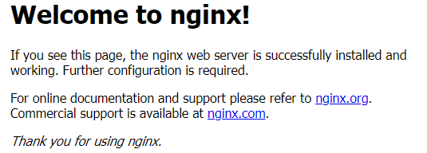
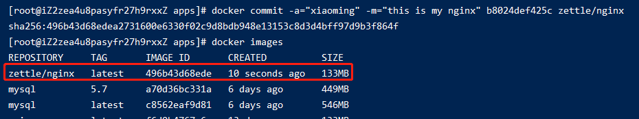
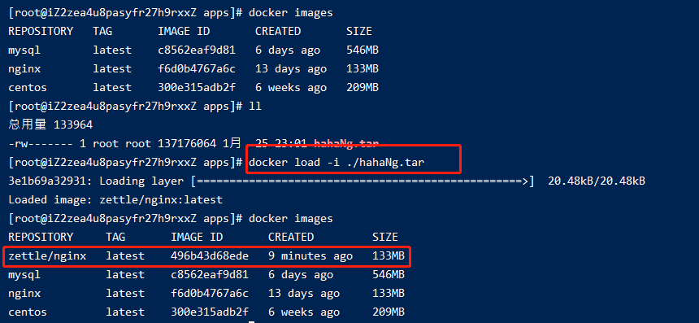

009-docker的迁移和备份
我们自定义镜像后，commit提交成本地镜像后，往往会push到远程仓库。但实际上，由于公司项目私密性，并不会push到远程仓库。
这个时候就需要通过docker镜像备份和迁移
1、备份和还原的语法
备份语法: docker save -o [起的镜像名称] [本地镜像名称]:[tag版本]
注意这里一定要写镜像名称，不要镜像id 备份到当前目录，备份后生成一个tar文件
恢复语法: docker load -i [tar文件名称]
2、例子
用nginx，我们自己改点index.html的内容，形成自己的nginx镜像
启动nginx镜像，映射到宿主机的7002端口
docker run -di -p 7002:80 nginx访问
http://59.110.21.75:7002

- 进入正在运行的nginx镜像，修改index.html。因为镜像里面没有vim等工具，我们把index.html复制到宿主机，修改完后再复制进镜像
# 复制到宿主机 b8024def425c为容器id docker cp b8024def425c:/usr/share/nginx/html/index.html /apps/myNg/index.html
vim /apps/myNg/index.html
复制会nginx容器里面
docker cp /apps/myNg/index.html b8024def425c:/usr/share/nginx/html/index.html
4. 再访问`http://59.110.21.75:7002`

5. 生成本地镜像
```shell
# -a:作者 -m:备注 b8024def425c:容器id
docker commit -a="xiaoming" -m="this is my nginx" b8024def425c zettle/nginx

- 如果是可以推动远程仓库，那么到这里就是push到远程仓库了。不过这里公司因为私密性不准推动远程仓库。
我们把生成好的镜像备份成tar压缩包
# 注意.tar要写上去
docker save -o hahaNg.tar zettle/nginx:latest
这个命令会在当前目录上生成hahaNg.tar文件
- 把
hahaNg.tar文件发给其他同事，其他同事把该tar上传到服务器上，然后执行docker load -i ./hahaNg.tar
